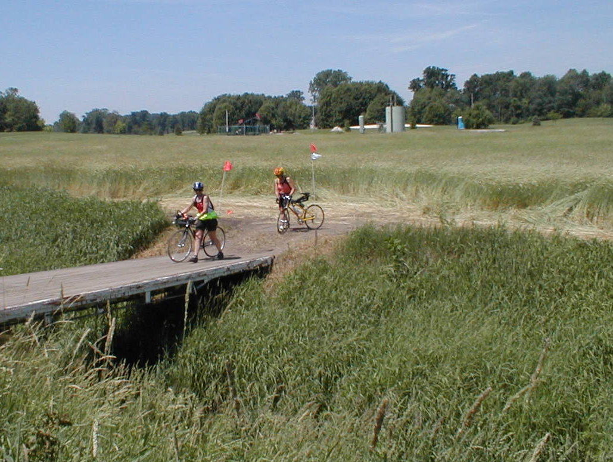

Day 38: June 19, Wooster, OH to Niles, OHPrevious Day - Home - Next Day Photo of the DayLynn and Ethel enjoying the Eco Challenge portion of today's ride. Keegan's LogDay 38: June 19, Wooster, OH to Niles, OH Mileage: 100.81 milesWeather: Sunny, High in the mid 90s, Varying winds Vertical Climb: 1380 feet Riding Time: 6:45 Breakfast this morning was the same strange situation as last night's dinner, but at least a buffet allows for quick eating. We left the hotel and began with a long decent, the same road we had climbed to the hotel yesterday. The beginning of the ride, the first 50 miles or so, were pretty hilly, we had a lot of long, slow climbs that seemed to add up. The weather was again good for a bike ride, mostly sunny with winds that didn't seem to be heading anywhere in particular but were in no hurry either. We pedaled along to Wayne, where we had to take a small detour where they were fixing a block of highway. There was a nice bakery downtown, I had a piece of apple pie a la mode, an excellent breakfast choice. From there we rode to the first sag on the side of a municipal airport. I had broken yet another spoke, but this one was on the drive side which requires a lot more work to fix, so Pat removed the bad spoke, tightened the ones around it, and sent me along with a 31 spoke wheel. In the next stretch we had two separate bridges out. The first one required that we walk off the road and through the grass, onto a trampled path through a wheat field, over a footpath the crossed the creek, and back across a nicely manicured lawn to the road. Ethel especially enjoyed the hike, she's a big eco-challenge fan. We rode another 7 miles to the next detour, this time we just took the roads around the bridge, but we had some trouble finding the route again on the other side. We ended up in a group with an extra 2 miles added to our day, once we found the route again we decided to stop for lunch. Big mistake, the food was greasy and slow, but we were hungry enough that it tasted good anyway. Only another 10 miles and we found ourselves at the second sag in Deerfield. This one was a brief stop, I chugged a GatorAde while dad went to an antique shop in an antique building across the street. We got back onto the highway, we followed busy highways almost the whole day today. We passed the hotel with 98 miles on the odometer, so we elected to ride on for a mile or two then come back to pick up the century, our third in as many days. Dinner was another buffet, but this one was a lot better than most. The make-your-own-flurry way a hit, this crowd always seems to hang out around the dessert counter. Chuck read a story to the group after dinner, but I missed this one too because I had taken my wheel out to have Pat replace the spoke for me. My bike is ready to go now, as good as new, or almost at least. Tomorrow is our shortest day in a while, only 89 miles, and less climbing too. We cross into Pennsylvania and ride on to Erie, then our fifth and last rest day. The weather tomorrow doesn't look too cooperative, but we'll get there anyway. Phil's LogAnother century, Keegan and I stretched it about three miles at the end to make it. It was only supposed to be 93 miles, but we had an odd detour for construction. It was a pretty hot day, and stickiness has returned to Ohio. A highlight of the ride was the town of Canal Fulton, a town akin to Zionsville. I had a huge drippy blueberry doughnut. Some of the ladies have taken to drinking chocolate milk. Lunch was a terrible greasy spoon in Bolton, I'll never again go to a place named "Sugar Shack". And across the street in Deerfield from our afternoon sag stop was an old old building. I ventured over, and it was thought to have been built in 1830. It was an antique store, an old disheveled one where you couldn't tell what was for sale and what was just old junk. I bought a Big Ben alarm clock from the 30's - exactly like one I had loaned in 1972 that was never returned. It has a wonderful patient chime that suddenly gets impatient and really goes off. Oh, and we had a detour through a wheat field. The bridge was out. We crossed on a rickety old wooden bridge that was a couple of hundred yards down this field, and doubled back through a front yard. Except for being too hot, about 92F, it was a good day. Tomorrow promises to be cooler, with a cool front and rain. Walter and Diane are a couple on this trip. They are retired from the hotel management and development business in Denver, but are originally from Cleveland. Like many in this ride, they did not grow up as bicyclists. Walter was in football and track at Princeton, a little riding. Diane was a bookkeeper that he hired into his business some years later. Walter was a runner until he was about 30, but had to quit because of knee pain. In high school, he had injured the anterior cruciate ligament, the ligament that holds the knee into front-rear alignment. There was no cure then. The injury grew progressively worse until he could not bear standing for any length of time. So in 1991 he had his knees replaced, both at once, with titanium ones. He said it wasn't scary, and he decided to have both done since the rehabilitation would be the same period for two as for one. The operation took 6-7 hours. He was on a stationary bike within one day as a part of his therapy. In a year, he was on a bicycle again. Diane, who had never been an athlete, took up the sport with Walter. She is a very strong cyclist today. For Walter's part, he said that the new knees works perfectly, there is no difference between them and what one would expect from perfectly functioning knees. So Walter and Diane ride, and seem to greatly enjoy the tour. So we are riding to Erie, Pennsylvania tomorrow. It should be cooler and rainy. There will likely not be an e-mail tomorrow night as Thursday is an OFF DAY!, our last one before Boston. Speaking of healed injuries, thanks to all for your concerns and prayers for Keegan's elbow and my Achilles heel. Both are healed and forgotten! |
{kind=link}